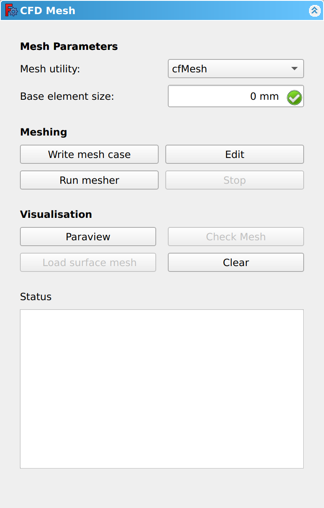
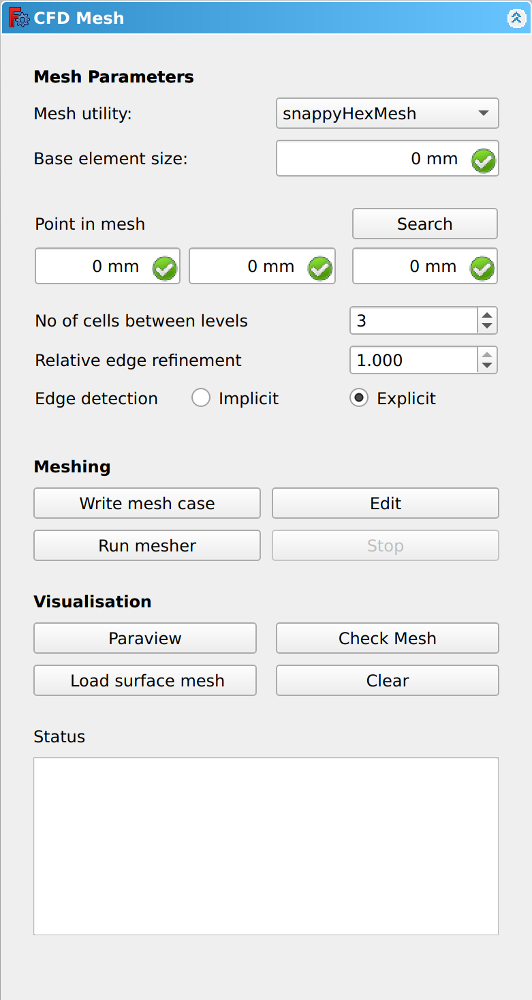
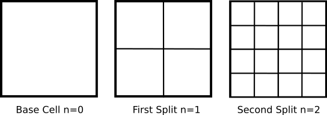
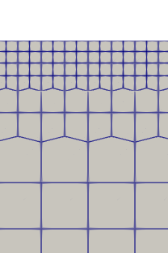

CfdOF MeshFromShape/de
|
|
| Menu location |
|---|
| CfdOF → CFD mesh |
| Workbenches |
| CfdOF |
| Default shortcut |
| None |
| Introduced in version |
| - |
| See also |
| None |
Beschreibung
The  CfdOF MeshFromShape command creates an object that holds data to build a mesh from geometry. The data can be edited in a task panel.
CfdOF MeshFromShape command creates an object that holds data to build a mesh from geometry. The data can be edited in a task panel.
Usage
Create mesh data object
- If required: activate the correct
 Analysis container by double-clicking it in the Tree View.
Analysis container by double-clicking it in the Tree View. - Select the geometry to be meshed.
- There are several ways to invoke the command:
- Press the
 CFD mesh button.
CFD mesh button. - Select the CfdOF → CFD mesh option from the menu.
- Press the
- A [GeometryName]_Mesh data object is added to the container.
- The task panel opens. See Options for more information.
- Press the Close button to finish the command.
Edit mesh data object
- Do one of the following:
- Follow steps 1 and 3 described above.
- Double-click a [GeometryName]_Mesh data object in Tree View.
- The task panel opens. See Options for more information.
- Press the Close button to finish the command.
Options
The task panel offers the following settings:
{kind=link}

Mesh Parameters
Mesh Utility dropdown box gives the following options:
- cfMesh
- cfMesh is an open-source, extensible library for automatic mesh generation. cfMesh supports both 3D and 2D meshes and can generate:
- Hex dominant 3D meshes
- Quad dominant 2D meshes
- Tetrahedral dominant 3D meshes
- Polyhedral dominant 3D meshes
- gmsh (tetrahedral)
- gmsh (polyhedral)
- Gmsh is an open source 3D finite element mesh generator.
- snappyHexMesh
- snappyHexMesh is an automatic split hex mesher which refines and snaps to surface. It generates 3D meshes containing hexahedra and split-hexahedra from a triangulated surface geometry in Stereolithography (STL) format. snappyHexMesh is used for complex geometries.
Base element size input box
- The Base, or Background, Mesh is the initial mesh, without refinement. If left as 0, it will default to 2 % of bounding box characteristic length. e.g. a 10 mm square cube will have boundary box characteristics of (102 + 102 + 102)0.5 of which 2% is 0.35mm.
snappyHexMesh parameters
The following parameters are only available when the snappyHexMesh Mesh Utility has been selected.
{kind=link}

Point in mesh
- Enter a location vector inside the region to be meshed, in the form x, y, z. This is used to identify whether the geometry is to be meshed on the outside, as in the case of fluid flowing over a pipe, or the inside, as in fluid flowing through a pipe. The Search button will try to locate a position in the region to be meshed.
No. of cells between levels & Relative edge refinement
- The base element size has already been defined above. Volume or surface refinement is achieved by splitting the base cells into 4 quads for 2D or 8 hexes for 3D models. The figure below shows the base cell being split into 4 quads at the first split n=1 and then each new cell being again split into 4 quads on the second spit, n=2.
{kind=link}

- The Relative edge refinement input box accepts values between 0.001 and 1. It defines the mesh size relative to the starting background mesh. The split can be calculated by 1/(2^n-1) e.g. for n=2, the relative edge refinement value is 0.5.
- To achieve a smooth transition between the split cells, ensure that there are a number of cells between consecutive refinement levels. The No. of cells between levels input box accepts integer values above or equal to 1 with a default value of 3.
{kind=link}

- The above example has a refinement level of n=2 giving a relative edge refinement of 0.5 with 2 cells between consecutive refinement levels.
Edge detection
- Implicit snaps to automatically detected surface geometric feature edges.
- Explicit snaps to manually generated feature edges.
Meshing
Write mesh case button
- Clicking on the Write mesh case creates the mesh files with the progress being displayed in the Status box.
Edit button
- The Edit button opens the directory where the OpenFOAM case files are stored, including the mesh files, generated above, in the constant directory. For more information about these files and directories please visit the UNDER THE HOOD PAGE.
Run mesher button
- Clicking on the Run mesher button starts the selected mesher process, with the progress being displayed in the Status box.
Stop button
- Used to stop either the Write mesh case or Run mesher processes.
Visualisation
Paraview button
- ParaView is an open-source, multi-platform data analysis and visualization application. Clicking on the Paraview button opens the mesher, to allow the mesh to be inspected.
Check Mesh button
- Clicking on the Check Mesh button runs the OpenFOAM checkMesh utility. This checks the validity of a mesh and outputs it’s result in the reports view area in FreeCAD. It’s possible to enlarge this box, by dragging the top of the reports panel up the screen.
Load surface mesh button
- Clicking on Load surface mesh displays the mesh on the geometry within FreeCad. It only the displays the mesh on the surface of the geometry and not the internals. For a more detailed inspection of the mesh use ParaView.
- Warning! If the message in the Status reads:
- "Triangulated representation of the surface mesh is shown - Please use Paraview for full mesh visualisation."
- The Load surface mesh image displayed is not fully representative of the mesh and you should view the mesh in ParaView.
Clear button
- The Clear button removes the mesh on the geometry within FreeCad.
Status output box
- When clicking Write mesh case or Run mesher, the progress is displayed in the Status output box, together with any error messages.
- When Write mesh case has finished, the last message in the Status output box will be 'Mesh case written successfully'.
- When Run mesher has finished, the last message in the Status output box will be 'Meshing completed'.
Notes
- Menu: Analysis container, CFD mesh, Mesh refinement, Interface dynamic refinement, Shockwave dynamic refinement, Select models, Add fluid properties, Fluid boundary, Initialise, Initialisation zone, Porous zone, Mean velocity force, Reporting function, Cfd scalar transport function, Solver job control
- Erste Schritte
- Installation: Herunterladen, Windows, Linux, Mac, Zusätzliche Komponenten, Docker, AppImage, Ubuntu Snap
- Grundlagen: Über FreeCAD, Graphische Oberfläche, Mausbedienung, Auswahlmethoden, Objektname, Voreinstellungseditor, Arbeitsbereiche, Dokumentstruktur, Objekteigenschaften, FreeCAD unterstützen, Spenden
- Hilfe: Anleitungen, Videoanleitungen
- Arbeitsbereiche: Std Base, Arch, Assembly, BIM, CAM, Draft, FEM, Inspection, Material, Mesh, OpenSCAD, Part, PartDesign, Points, Reverse Engineering, Robot, Sketcher, Spreadsheet, Surface, TechDraw, Test Framework